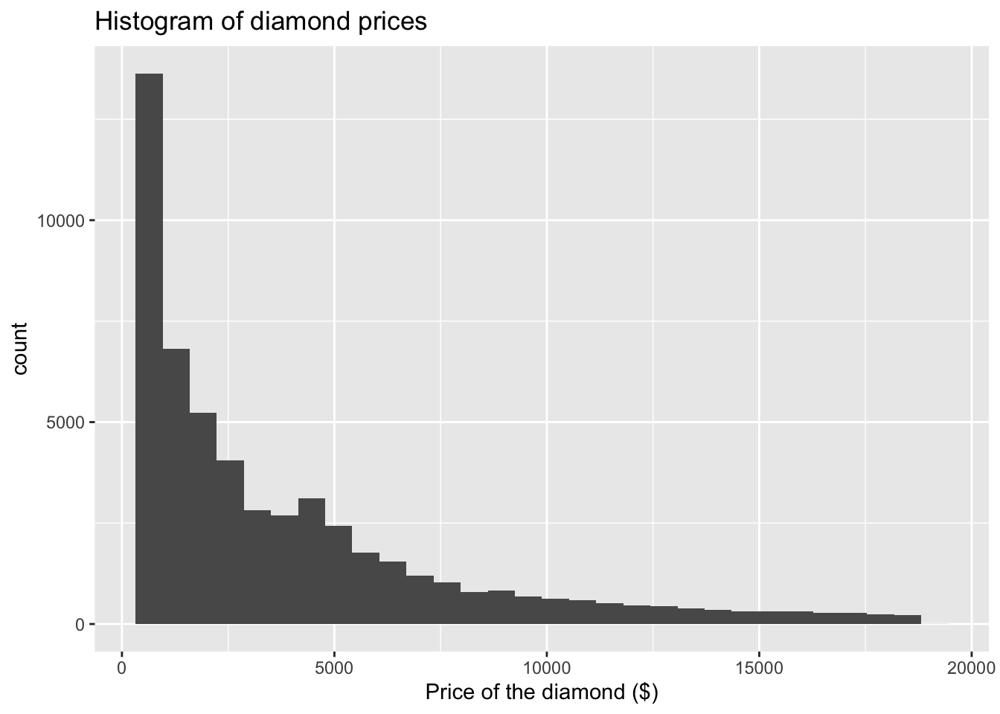
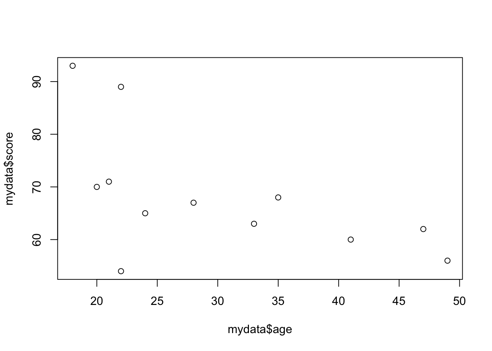
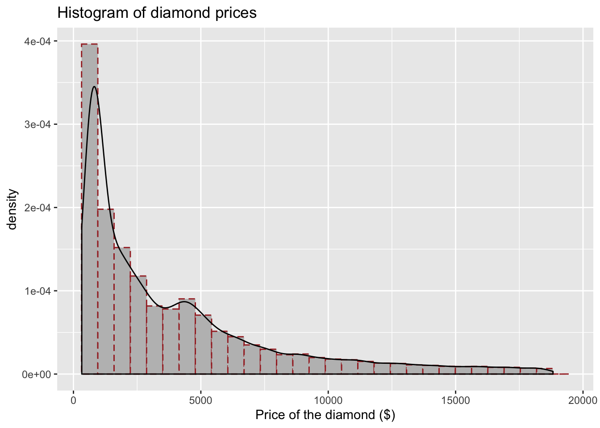
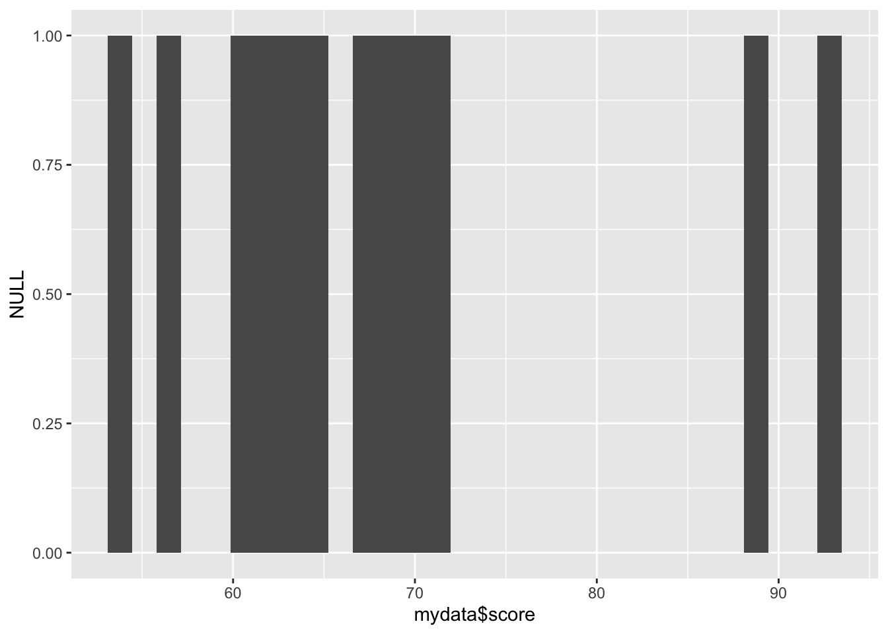
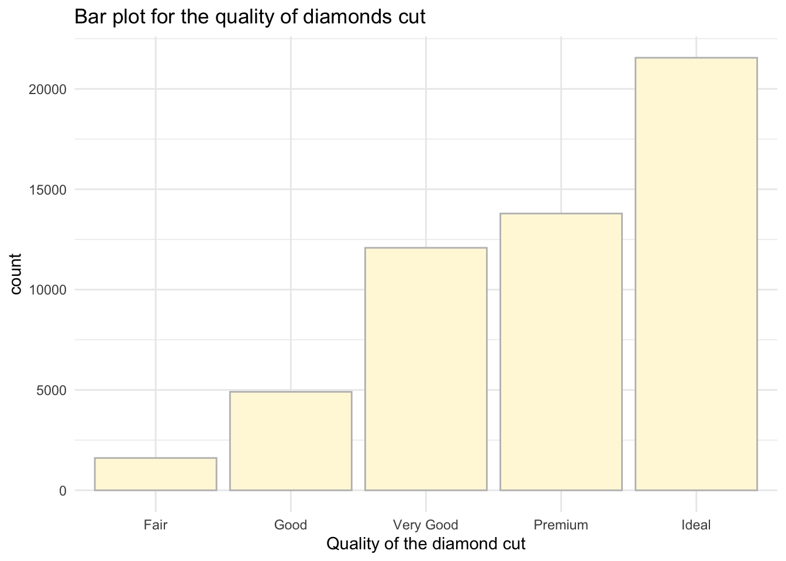
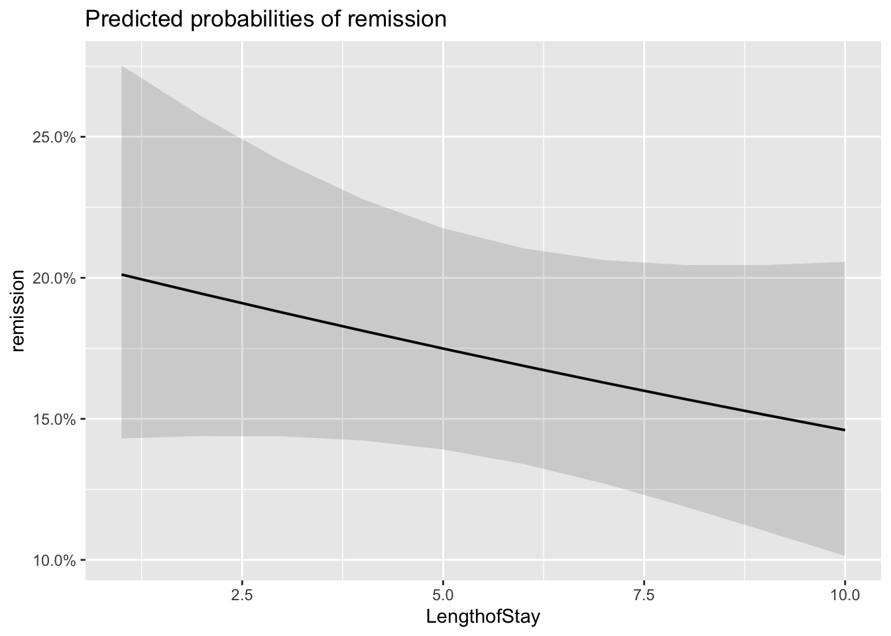
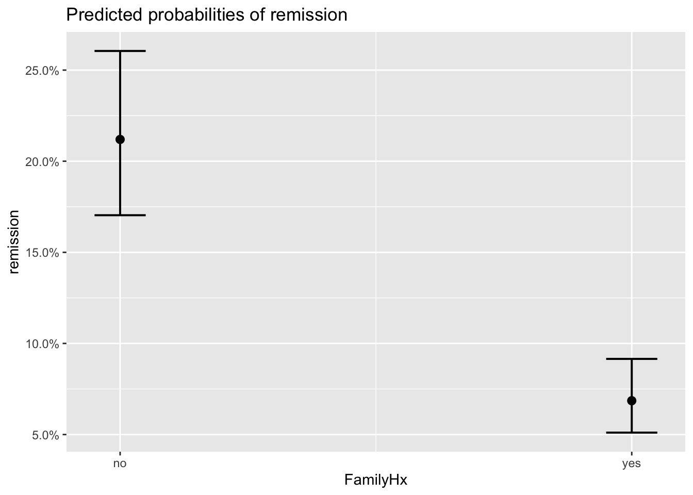
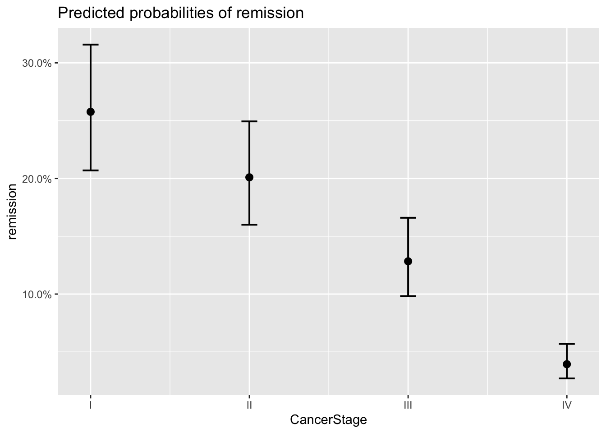
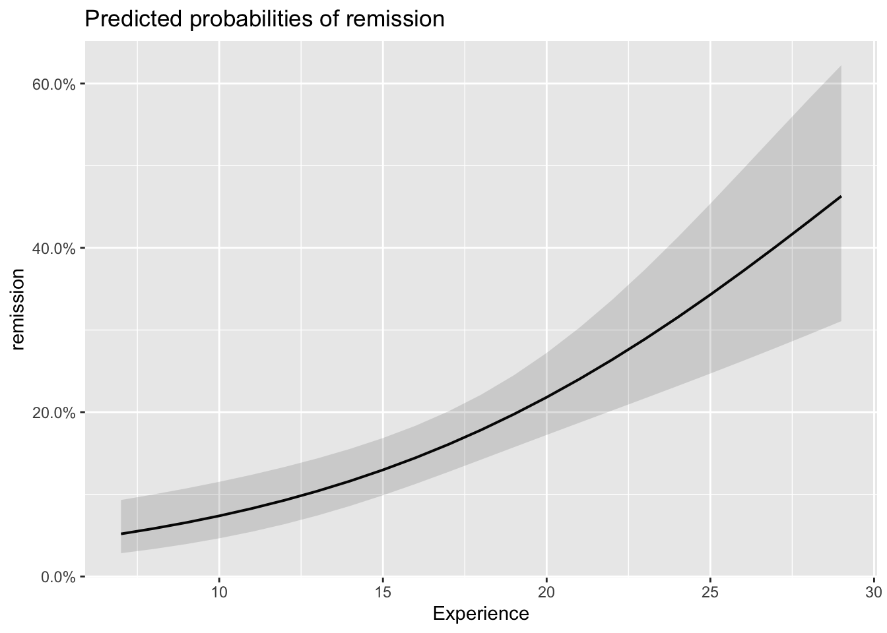

Chapter 8 Now for Advanced: logistic mixed effects
Here we will consider two examples, one will be quite general - we will study the predictors of lung cancer remission (adapted from UCLA Statistical Consulting Group) and the other one from linguistics - based on a dataset available in the package languageR which consists of data sets and functions accompanying the book ’Analyzing Linguistic Data: A practical introduction to statistics’, Cambridge University Press, 2007. The latter one will be left for you to try to replicate some of the main findings in the paper. ( see section DIY)
The main stages will be illustrated on a simplistic dataset but you are welcome to explore either Dative or your own data to try what you have learnt later.
#We wil need quite a few packages (some for plots)
library(GGally)
library(reshape2)
library(compiler)
library(parallel)
library(boot)
library(ggplot2)#Lets load the data
lung_cancer <- read.csv("lung_cancer.csv")Explore the data a little before getting on with the analysis.You will see that we have quite a lot different variables. Remember that for good model, there is no need to include everything but key predictors should always be in. We can focus on Length of Stay, Experience and Cancer Stage.
#We can use str()
str(lung_cancer)## 'data.frame': 8525 obs. of 28 variables:
## $ X : int 1 2 3 4 5 6 7 8 9 10 ...
## $ tumorsize : num 68 64.7 51.6 86.4 53.4 ...
## $ co2 : num 1.53 1.68 1.53 1.45 1.57 ...
## $ pain : int 4 2 6 3 3 4 3 3 4 5 ...
## $ wound : int 4 3 3 3 4 5 4 3 4 4 ...
## $ mobility : int 2 2 2 2 2 2 2 3 3 3 ...
## $ ntumors : int 0 0 0 0 0 0 0 0 2 0 ...
## $ nmorphine : int 0 0 0 0 0 0 0 0 0 0 ...
## $ remission : int 0 0 0 0 0 0 0 0 0 0 ...
## $ lungcapacity: num 0.801 0.326 0.565 0.848 0.886 ...
## $ Age : num 65 53.9 53.3 41.4 46.8 ...
## $ Married : Factor w/ 2 levels "no","yes": 1 1 2 1 1 2 2 1 2 1 ...
## $ FamilyHx : Factor w/ 2 levels "no","yes": 1 1 1 1 1 1 1 1 2 1 ...
## $ SmokingHx : Factor w/ 3 levels "current","former",..: 2 2 3 2 3 3 1 2 2 3 ...
## $ Sex : Factor w/ 2 levels "female","male": 2 1 1 2 2 2 1 2 2 2 ...
## $ CancerStage : Factor w/ 4 levels "I","II","III",..: 2 2 2 1 2 1 2 2 2 2 ...
## $ LengthofStay: int 6 6 5 5 6 5 4 5 6 7 ...
## $ WBC : num 6088 6700 6043 7163 6443 ...
## $ RBC : num 4.87 4.68 5.01 5.27 4.98 ...
## $ BMI : num 24.1 29.4 29.5 21.6 29.8 ...
## $ IL6 : num 3.7 2.63 13.9 3.01 3.89 ...
## $ CRP : num 8.086 0.803 4.034 2.126 1.349 ...
## $ DID : int 1 1 1 1 1 1 1 1 1 1 ...
## $ Experience : int 25 25 25 25 25 25 25 25 25 25 ...
## $ School : Factor w/ 2 levels "average","top": 1 1 1 1 1 1 1 1 1 1 ...
## $ Lawsuits : int 3 3 3 3 3 3 3 3 3 3 ...
## $ HID : int 1 1 1 1 1 1 1 1 1 1 ...
## $ Medicaid : num 0.606 0.606 0.606 0.606 0.606 ...For main predictors we picked four variables to double check their distribution and to make sure that there are no multicolinearity in predictors. Check that you can do quick checks of how continuous values are grouped by categorical ones - ggpairs() is quite handy for that.
library(ggplot2)
#We can study our variables in one go and check: distributions and correlations of the main predictors
ggpairs(lung_cancer[, c("CancerStage", "LengthofStay", "Experience")])
#We can also check how the continuous predictors relate to our outcome variable 'remission'
tmp <- melt(lung_cancer[, c("remission", "LengthofStay", "Experience")],
id.vars="remission")
#Plot
ggplot(tmp, aes(factor(remission), y = value, fill=factor(remission))) +
geom_boxplot() +
facet_wrap(~variable, scales="free_y")
# Estimate the model and store results in model_lc
model_lc <- glmer(remission ~ Age + LengthofStay + FamilyHx + CancerStage + CancerStage + Experience + (1 | DID) + (1 | HID),
data = lung_cancer, family = binomial, optimizer='Nelder_Mead') #note that I have updated the optimizer (to avoid warnings)
# Print the mod results:what do you find?
summary(model_lc)## Generalized linear mixed model fit by maximum likelihood (Laplace
## Approximation) [glmerMod]
## Family: binomial ( logit )
## Formula:
## remission ~ Age + LengthofStay + FamilyHx + CancerStage + CancerStage +
## Experience + (1 | DID) + (1 | HID)
## Data: lung_cancer
##
## AIC BIC logLik deviance df.resid
## 7225.6 7296.1 -3602.8 7205.6 8515
##
## Scaled residuals:
## Min 1Q Median 3Q Max
## -3.9563 -0.4229 -0.1890 0.3629 8.2299
##
## Random effects:
## Groups Name Variance Std.Dev.
## DID (Intercept) 3.8471 1.9614
## HID (Intercept) 0.2419 0.4919
## Number of obs: 8525, groups: DID, 407; HID, 35
##
## Fixed effects:
## Estimate Std. Error z value Pr(>|z|)
## (Intercept) -1.960353 0.568451 -3.449 0.000564 ***
## Age -0.015968 0.005904 -2.705 0.006836 **
## LengthofStay -0.043030 0.035505 -1.212 0.225524
## FamilyHxyes -1.295706 0.093369 -13.877 < 2e-16 ***
## CancerStageII -0.321924 0.076376 -4.215 2.50e-05 ***
## CancerStageIII -0.857475 0.100025 -8.573 < 2e-16 ***
## CancerStageIV -2.137657 0.162281 -13.173 < 2e-16 ***
## Experience 0.125360 0.026881 4.664 3.11e-06 ***
## ---
## Signif. codes: 0 '***' 0.001 '**' 0.01 '*' 0.05 '.' 0.1 ' ' 1
##
## Correlation of Fixed Effects:
## (Intr) Age LngthS FmlyHx CncSII CnSIII CncSIV
## Age -0.390
## LengthofSty -0.141 -0.319
## FamilyHxyes -0.013 0.103 -0.112
## CancerStgII 0.084 -0.181 -0.186 -0.052
## CancrStgIII 0.139 -0.222 -0.239 -0.051 0.513
## CancerStgIV 0.148 -0.220 -0.194 -0.012 0.357 0.347
## Experience -0.835 -0.009 -0.004 -0.022 -0.002 -0.005 -0.012
## convergence code: 0
## Model failed to converge with max|grad| = 0.858202 (tol = 0.001, component 1)We can do some analysis that is based on model object. In fact, you can extract even more if you need.
se <- sqrt(diag(vcov(model_lc))) #standard errors
# table of estimates with 95% CI using errors we obtained above
(CI_estimates <- cbind(Est = fixef(model_lc), LL = fixef(model_lc) - 1.96 * se, UL = fixef(model_lc) + 1.96 *
se))## Est LL UL
## (Intercept) -1.96035276 -3.07451662 -0.846188910
## Age -0.01596794 -0.02753911 -0.004396764
## LengthofStay -0.04303048 -0.11261951 0.026558540
## FamilyHxyes -1.29570603 -1.47870949 -1.112702564
## CancerStageII -0.32192409 -0.47162068 -0.172227491
## CancerStageIII -0.85747504 -1.05352351 -0.661426574
## CancerStageIV -2.13765689 -2.45572684 -1.819586939
## Experience 0.12536019 0.07267364 0.178046738We can look at the effect in terms of odds and associated CIs.
#To get to the odds, we can take exponential of beta estimates
exp(CI_estimates)## Est LL UL
## (Intercept) 0.1408087 0.04621196 0.4290470
## Age 0.9841589 0.97283663 0.9956129
## LengthofStay 0.9578822 0.89349056 1.0269144
## FamilyHxyes 0.2737046 0.22793165 0.3286695
## CancerStageII 0.7247532 0.62399016 0.8417877
## CancerStageIII 0.4242319 0.34870691 0.5161145
## CancerStageIV 0.1179308 0.08580081 0.1620927
## Experience 1.1335567 1.07537951 1.1948812To see the overall variation around the intercepts estimate we can use dotplot() from lattice:
#Try with dotplot from lattice
dotplot(ranef(model_lc, which = "DID", condVar = TRUE), #I specify the ID and whether I want conditional var.
scales = list(y = list(alternating = 0))) # by adjusting this I am less bother about exact ID## $DID
#Shorter for ranef since we have less hospitals then individuals
dotplot(ranef(model_lc, which = "HID", condVar = TRUE))## $HIDLets also vary the slopes for each patient:
model_lc_slope<-glmer(remission ~ Age + LengthofStay + FamilyHx + CancerStage +
Experience + (1 + LengthofStay | DID) + (1 | HID), data = lung_cancer, family = binomial,
nAGQ = 1)## Warning in checkConv(attr(opt, "derivs"), opt$par, ctrl =
## control$checkConv, : Model failed to converge with max|grad| = 0.077799
## (tol = 0.001, component 1)summary(model_lc_slope)## Generalized linear mixed model fit by maximum likelihood (Laplace
## Approximation) [glmerMod]
## Family: binomial ( logit )
## Formula:
## remission ~ Age + LengthofStay + FamilyHx + CancerStage + Experience +
## (1 + LengthofStay | DID) + (1 | HID)
## Data: lung_cancer
##
## AIC BIC logLik deviance df.resid
## 7173.7 7258.4 -3574.9 7149.7 8513
##
## Scaled residuals:
## Min 1Q Median 3Q Max
## -4.5499 -0.4239 -0.1790 0.3642 8.1358
##
## Random effects:
## Groups Name Variance Std.Dev. Corr
## DID (Intercept) 0.2873 0.5360
## LengthofStay 0.1498 0.3870 -0.27
## HID (Intercept) 0.5164 0.7186
## Number of obs: 8525, groups: DID, 407; HID, 35
##
## Fixed effects:
## Estimate Std. Error z value Pr(>|z|)
## (Intercept) -0.881739 0.540500 -1.631 0.102819
## Age -0.015834 0.005929 -2.671 0.007573 **
## LengthofStay -0.193961 0.045356 -4.276 1.90e-05 ***
## FamilyHxyes -1.343919 0.095171 -14.121 < 2e-16 ***
## CancerStageII -0.294438 0.076198 -3.864 0.000111 ***
## CancerStageIII -0.862329 0.101282 -8.514 < 2e-16 ***
## CancerStageIV -2.278712 0.169756 -13.423 < 2e-16 ***
## Experience 0.106943 0.023653 4.521 6.14e-06 ***
## ---
## Signif. codes: 0 '***' 0.001 '**' 0.01 '*' 0.05 '.' 0.1 ' ' 1
##
## Correlation of Fixed Effects:
## (Intr) Age LngthS FmlyHx CncSII CnSIII CncSIV
## Age -0.418
## LengthofSty -0.247 -0.252
## FamilyHxyes -0.024 0.104 -0.072
## CancerStgII 0.105 -0.181 -0.163 -0.054
## CancrStgIII 0.146 -0.221 -0.181 -0.051 0.496
## CancerStgIV 0.119 -0.212 -0.115 0.002 0.335 0.336
## Experience -0.803 -0.002 0.068 -0.020 -0.013 -0.007 0.011
## convergence code: 0
## Model failed to converge with max|grad| = 0.077799 (tol = 0.001, component 1)We can then plot both intercepts and slopes variability:
dotplot(ranef(model_lc_slope, which = "DID", condVar = TRUE),
scales = list(y = list(alternating = 0)))## $DID
We can also do something which I think is magical, using package sjPlot - we can without effort get plots of random effects and CI for predicted probabilities.
library(effects)
library(sjPlot)
#We can plot either random effects
plot_model(model_lc, type='re')## [[1]]
##
## [[2]]
#Or we can check predicted probabilities
plot_model(model_lc, type='eff')## $Age
##
## $LengthofStay
##
## $FamilyHx
##
## $CancerStage
##
## $Experience
Lastly, what we may want to do is to evaluate our predictions in terms of overall accuracy:
#Use the models to predict the outcome
predictions_lc <- as.numeric(predict(model_lc, type="response")>0.5)
predictions_lc_slopes<- as.numeric(predict(model_lc_slope, type="response")>0.5)Now lets investigate the ratio of correctly predicted cases over observed via confusion matrix, you can either use table() or confusionMatrix() from the package ‘caret’.
#Simple table. Note: we ll have to claculate by hand the ratio of correctly predicted cases over the total:
table(predictions_lc, lung_cancer$remission)##
## predictions_lc 0 1
## 0 5517 929
## 1 487 1592#Sum the corrected cases and divide by total n=8525
ratio_correct<- (5529+1617)/8525
ratio_correct## [1] 0.8382405I personally would use caret as results will look tidier and more complete.
#Load caret
library(caret)#Confusion matrix between predicted and observed
confusionMatrix(as.factor(predictions_lc), as.factor(lung_cancer$remission), dnn = c("Prediction", "Reference"))## Confusion Matrix and Statistics
##
## Reference
## Prediction 0 1
## 0 5517 929
## 1 487 1592
##
## Accuracy : 0.8339
## 95% CI : (0.8258, 0.8417)
## No Information Rate : 0.7043
## P-Value [Acc > NIR] : < 2.2e-16
##
## Kappa : 0.5799
##
## Mcnemar's Test P-Value : < 2.2e-16
##
## Sensitivity : 0.9189
## Specificity : 0.6315
## Pos Pred Value : 0.8559
## Neg Pred Value : 0.7658
## Prevalence : 0.7043
## Detection Rate : 0.6472
## Detection Prevalence : 0.7561
## Balanced Accuracy : 0.7752
##
## 'Positive' Class : 0
## Well, clearly confusion matrix gives us a much nicer output :)
Let us see now whether our final model with varying slopes and varying intercepts is better in predicting remission cases.
#Create confusion matrix with varying slopes model
confusionMatrix(as.factor(predictions_lc_slopes), as.factor(lung_cancer$remission), #specify variables
dnn = c("Prediction", "Reference")) #give labels to the columns## Confusion Matrix and Statistics
##
## Reference
## Prediction 0 1
## 0 5501 889
## 1 503 1632
##
## Accuracy : 0.8367
## 95% CI : (0.8287, 0.8445)
## No Information Rate : 0.7043
## P-Value [Acc > NIR] : < 2.2e-16
##
## Kappa : 0.5898
##
## Mcnemar's Test P-Value : < 2.2e-16
##
## Sensitivity : 0.9162
## Specificity : 0.6474
## Pos Pred Value : 0.8609
## Neg Pred Value : 0.7644
## Prevalence : 0.7043
## Detection Rate : 0.6453
## Detection Prevalence : 0.7496
## Balanced Accuracy : 0.7818
##
## 'Positive' Class : 0
## The improvement is rather tiny if judged by accuracy only. To be sure, lets also run a likelihood ratio test:
#Likelihood ratio test
lrtest(model_lc, model_lc_slope)## Likelihood ratio test
##
## Model 1: remission ~ Age + LengthofStay + FamilyHx + CancerStage + CancerStage +
## Experience + (1 | DID) + (1 | HID)
## Model 2: remission ~ Age + LengthofStay + FamilyHx + CancerStage + Experience +
## (1 + LengthofStay | DID) + (1 | HID)
## #Df LogLik Df Chisq Pr(>Chisq)
## 1 10 -3602.8
## 2 12 -3574.9 2 55.826 7.542e-13 ***
## ---
## Signif. codes: 0 '***' 0.001 '**' 0.01 '*' 0.05 '.' 0.1 ' ' 1The test suggests that the second model may offer an improvement in the fit regardless of marginally small change in the predictive power. After we have performed so many checks we may perhaps just go with the last model as, theoretically, it would also make sense.
Quick Note: The example was partially adapted from UCLA’s worked example of GGLM. You can check more here, where you can also find a bit more on visualisations and few other tricks.